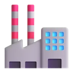

Rotas prontas no automático.Cada entrega e coleta acompanhada no mapa.
Importe as notas e o ROTAV3 monta sozinho a sequência de paradas pelo peso, pela
capacidade e pelo horário de cada cliente. O motorista recebe a rota no WhatsApp e cada
baixa aparece no painel na hora.
MotoristaLink da rota pelo WhatsApp, válido por 7 dias
Enviar pelo WhatsApp
0 de 6 paradas com baixa
Localização ao vivo: agora
Todos 21Entregas 17Coletas 4
EntregaColetaCD Guarulhos
R
Escritórioonline
Carlos, sua rota de hoje: 6 paradas, saída 07:30 do CD Guarulhos.
ROTAV3 · Rota de hojeToque para abrir
07:12 ✓✓
Rota de hoje
VUC — Carlos (exemplo)saída 07:30 · CD Guarulhos
2 de 6
Demonstração animada com dados fictícios: importação das notas, pedidos no mapa,
geração da rota de um VUC com 6 paradas, envio do link ao motorista pelo WhatsApp e
acompanhamento das baixas no painel.
Telas do sistema com dados fictícios.
XML, Excel e CSVnotas entram de uma vez
Entregas e coletasna mesma viagem
Janela de horáriode cada cliente
Sem aplicativoo motorista abre pelo link
Baixa com fotodo canhoto, na hora
Assistente de IAque lê a operação do dia
Um dia de operação com o ROTAV3.
Do primeiro XML da manhã à última baixa da tarde, tudo acontece no mesmo painel. Estas
são as telas do sistema, com pedidos de exemplo.
1
Importe as notas do dia.
Arraste os XML das NF-e, uma planilha Excel ou um CSV. O ROTAV3 lê destinatário,
endereço, peso e volumes, separa entregas de coletas e localiza os endereços pelo
CEP. Nota que já está em rota não é alterada.
Importar notasXML da NF-e, Excel, CSV ou PDF
NF-e 31024.xmlNF-e 31031.xmlNF-e 31047.xml+18
✅ 21 notas importadas: 17 entregas e 4 coletas. 2 notas já estavam em rota e não foram alteradas.
2
Confira tudo no mapa.
Entregas e coletas aparecem com cores diferentes e dá para filtrar por tipo. Você vê
quem está longe do CD e quais pedidos ainda estão só com a cidade, sem o endereço
exato.
Todos 21Entregas 17Coletas 4
EntregaColetaCD
3
Gere a rota do veículo.
Escolha o veículo, a capacidade, a hora de saída e o que entra na viagem. O sistema
escolhe os pedidos que cabem e a ordem das paradas, com as entregas antes das
coletas e o horário de cada cliente respeitado.
VUC · 6 paradas5 entregas, 1 coleta
📦 769 kg na saída🛣️ 38,4 km⏱️ volta 11:35
1Mercado Bela Vista
2Farmácia Central
3Padaria Primavera horário 09:00–10:00
4Loja do Construtor
5Auto Peças Avenida
6Fábrica de Embalagens Sul coleta
4
Mande a rota para o motorista.
Um toque e o link da rota vai pelo WhatsApp. O motorista abre no navegador do
celular, sem instalar aplicativo, e segue parada por parada pelo Google Maps ou
pelo Waze. O link vale por 7 dias e pode ser encerrado pelo escritório.
MotoristaCarlos (exemplo) · VUC
Enviar pelo WhatsAppCopiar link
Carlos, sua rota de hoje: 6 paradas, saída 07:30 do CD Guarulhos.ROTAV3 · Rota de hoje — toque para abrir
5
Acompanhe cada baixa.
Cada parada marcada no celular aparece no painel na hora, com o nome de quem recebeu
e a foto do canhoto. Quando algo não é entregue, o motivo chega junto e o pedido
volta para os pendentes.
3 de 6 paradas com baixa
✓ Entregue 07:58Mercado Bela Vista · recebido por Ana · 📷 foto
✓ Entregue 08:26Farmácia Central · recebido por Jorge
✗ Não realizado 09:10Padaria Primavera · Estabelecimento fechado · voltou para os pendentes
Localização ao vivo: há 1 min
6
Feche o dia e prepare o próximo.
As rotas ficam salvas com as baixas e as fotos. Pergunte à IA quais pedidos podem
atrasar e importe as notas do dia seguinte.
VUC · Carlos (exemplo)6 paradas · 5 entregues · 1 não realizada
Fiorino · Ana (exemplo)8 paradas · todas entregues
✨Quais pedidos podem atrasar?
Monte uma rota agora, com pedidos de exemplo.
São as mesmas escolhas da tela de roteirização do sistema. Mude o veículo, o que entra
na viagem e o limite de paradas e veja a rota mudar no mapa.
EntregaColetaCD (exemplo)Rota
Escolha as opções e toque em Gerar rota.
Simulação feita no seu navegador, com pedidos fictícios na região de Guarulhos e
distâncias estimadas em linha reta × 1,3. No sistema, a rota é calculada pelo motor de
otimização Google OR-Tools com as distâncias pelas ruas.
Todos os pedidos do dia, num mapa só.
Antes de montar as rotas, veja onde está cada pedido: quantos há em cada cidade, o que é
entrega e o que é coleta, quem tem horário marcado e o que está longe do centro de
distribuição.
O motorista marca no celular. Você vê no painel, na hora.
Este é o celular do motorista de verdade, com uma rota de exemplo. Toque em
Entregue ou Não realizado numa parada e acompanhe o painel do escritório
mudar na hora.
Abrindo a tela do motorista…
Carlos (exemplo) — VUC · 6 paradas5 entregas, 1 coleta · saída 07:30 · CD Guarulhos
🚚 Em rota
0 de 6 paradas com baixa
Localização ao vivo: aguardando a primeira baixa
Painel simulado nesta página com as baixas que você marcar no celular. Nada é
enviado para servidor nenhum. No sistema, a localização vem do celular do motorista,
com a permissão dele, enquanto a página da rota está aberta.
Sem aplicativo para instalarO link abre no navegador de qualquer celular. Vale por 7 dias e o escritório pode encerrar antes.
Baixa com comprovanteNome de quem recebeu, foto do canhoto e, quando não deu certo, o motivo.
Rastreador da frotaJá usa rastreador? Conectamos o ROTAV3 a ele quando o fornecedor libera os dados. Confirmamos na demonstração.
Pergunte sobre a operação de hoje.
O assistente de IA do ROTAV3 lê os pedidos pendentes e as rotas geradas e responde em
português, com os números do dia. Ele sugere; quem decide é a sua equipe.
O que ele usa para responder
Pedidos pendentes por cidade, com peso, tipo, urgência e horário marcado
As rotas geradas: paradas, quilômetros, tempo e veículo
A capacidade dos veículos que você usa
É instruído a usar só os dados do sistema e a
dizer o que falta quando a informação não está lá.
✨
IA AssistenteConverse com a IA sobre a operação de hoje
Respostas de exemplo, montadas com os 86 pedidos fictícios do mapa acima.
O painel com a cara da sua empresa.
Na implantação, ajustamos cores e logo do sistema para a identidade da sua empresa, e
partes do fluxo podem ser adaptadas à sua operação.
Via Verde Transportes
2SL Log
Empresas parceiras.
Tudo o que já vem no sistema.
Sem módulos extras: cada plano tem as funções abaixo.
Antes de sair
Importação de notasXML da NF-e, Excel e CSV, vários arquivos de uma vez. PDF em teste.

Entregas e coletasCada nota entra como entrega ou coleta; na viagem mista, as entregas vêm primeiro.
Mapa com filtrosTodos os pedidos pendentes, com o CD, filtro por tipo e aviso de local aproximado.
Rota por peso e capacidadeDo Fiorino à carreta, com limite de paradas e jornada de 8 horas.
Agendamentos e janela de horárioPedidos agendados entram no dia certo, com o horário do cliente respeitado.
Na rua
Link do motoristaEnviado pelo WhatsApp, abre no navegador, com Google Maps e Waze.
Baixa com fotoEntregue ou coletado com nome de quem recebeu e foto do canhoto.
Não realizado com motivoO pedido volta para os pendentes com a ocorrência registrada.
Localização ao vivoPelo celular do motorista, com a permissão dele.
No escritório
Painel e alertasPedidos por região, agendados do dia e o que precisa de atenção.
Rotas salvasHistórico com as baixas, as fotos e o andamento de cada viagem.
IA AssistentePerguntas sobre divisão de rotas, atrasos e clientes isolados.
Acesso por usuárioCada pessoa entra com e-mail e senha e só depois de liberada.
No navegadorComputador, tablet ou celular, sem instalar nada.
Dois jeitos de ver o ROTAV3 funcionando.
Feito para transportadoras, distribuidoras, atacados e indústrias com frota própria que
entregam e coletam todos os dias. Os dois caminhos são gratuitos.
Entre no sistema hoje
Peça o acesso de demonstração pelo WhatsApp. Você recebe e-mail e senha para usar o
ROTAV3 com pedidos fictícios por 7 dias: importe notas de teste, gere rotas, abra a
tela do motorista e converse com a IA.
Envie as notas de um dia da sua operação. Montamos as rotas desse dia no ROTAV3 e
mostramos tudo numa chamada de 20 minutos, direto com quem desenvolve o sistema.
CadastroCD, veículos, motoristas e usuários da equipe.
Sua marcaCores e logo da empresa no painel.
TreinamentoOnline, com as notas da sua operação.
SuportePelo WhatsApp, com quem desenvolve o sistema.
Preço pelo tamanho da frota.
Sem cobrança por entrega e sem equipamento para instalar. O valor do seu plano depende de
quantos veículos rodam na operação e é fechado na demonstração.
Planos a partir de
R$197/mês
Para operações com poucos veículos. Frotas maiores têm o valor calculado pelo número de veículos.
Suporte pelo WhatsApp, com quem desenvolve o sistema
Mensal, sem fidelidade, sem multa e sem taxa de entrada
Sincronização com rastreador: conectamos o ROTAV3 ao rastreador que a sua frota já
usa, quando o fornecedor libera o acesso aos dados, e os veículos aparecem no mapa junto
com as rotas. Confirmamos a compatibilidade e o valor na demonstração.
Verificar o meu rastreador
Você escolhe o veículo, a capacidade, a hora de saída, o limite de paradas e o que entra
na viagem: entregas, coletas ou as duas. O sistema escolhe os pedidos que cabem e calcula
a melhor ordem das paradas com o Google OR-Tools, usando as distâncias pelas ruas e
respeitando o peso, a capacidade, a jornada e a janela de horário de cada cliente. Os
pedidos que não couberem continuam pendentes para a próxima viagem.
Preciso cadastrar os pedidos um por um?
Não. Importe o XML das NF-e (vários arquivos de uma vez), uma planilha Excel ou um CSV.
A leitura de PDF (DANFE) existe, mas ainda é experimental: para um resultado confiável,
use o XML ou a planilha. Notas que já estão em rota não são alteradas.
Funciona para coletas também?
Sim. Cada nota entra como entrega ou coleta, com cores diferentes no mapa e filtro por
tipo. Numa viagem com as duas, o sistema faz as entregas primeiro e as coletas depois e
confere a carga a bordo em cada trecho.
Como o motorista recebe a rota?
Pelo WhatsApp: o sistema gera um link da rota e o motorista abre no navegador do celular,
sem instalar aplicativo. Ele navega pelo Google Maps ou Waze e marca cada parada como
entregue ou coletada (com o nome de quem recebeu e a foto do canhoto) ou como não
realizada (com o motivo). O link vale por 7 dias e pode ser encerrado pelo escritório.
Dá para acompanhar os veículos em tempo real?
Sim, de dois jeitos. Pelo celular do motorista: com a permissão dele, a página da rota
envia a localização enquanto está aberta, e o painel mostra o veículo no mapa. Pelo
rastreador da frota: conectamos o ROTAV3 ao rastreador que a sua frota já usa, quando o
fornecedor libera o acesso aos dados; confirmamos a compatibilidade e o valor na
demonstração.
O que o assistente de IA faz?
Responde perguntas sobre a operação do dia com base nos pedidos e nas rotas do sistema:
como dividir as rotas, quais clientes estão isolados, quais pedidos podem atrasar e qual
veículo usar. Ele não altera nada sozinho; a decisão continua com a sua equipe.
Preciso trocar o sistema que já uso?
Não. O ROTAV3 trabalha com as notas fiscais que a sua empresa já emite. Integração
direta com outros sistemas é avaliada caso a caso.
O sistema pode ter a identidade visual da minha empresa?
Sim. Cores e logo são ajustados na implantação, e partes do fluxo podem ser adaptadas aos
processos da sua empresa. O escopo é combinado depois de conhecermos a operação.
Quanto custa?
Os planos começam em R$ 197 por mês. O valor exato depende do tamanho da frota e é
fechado na demonstração, com implantação e treinamento inclusos e sem taxa de entrada.
Ver o que vem nos planos.
Dá para testar antes de pagar?
Sim, de dois jeitos e sem custo: o acesso de demonstração (e-mail e senha pelo WhatsApp,
com pedidos fictícios, por 7 dias) ou a demonstração com as notas de um dia da sua
operação, numa chamada de 20 minutos. Ver como funciona.
Tem fidelidade?
Não. O plano é mensal, sem multa, e o cancelamento pode ser feito a qualquer momento.
Como ficam os dados da minha operação?
São usados só para planejar e acompanhar as suas rotas. Cada usuário entra com e-mail e
senha e só vê o sistema depois de liberado pelo administrador. Na demonstração explicamos
onde os dados ficam armazenados. Os dados enviados por esta página seguem a
política de privacidade.
Veja as suas rotas no ROTAV3.
Preencha e a conversa abre no WhatsApp com a mensagem pronta, direto com a equipe que
desenvolve o sistema. Se preferir entrar sozinho, peça o acesso de demonstração.